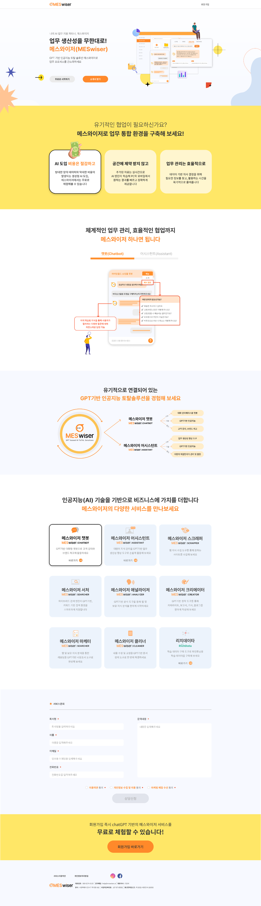

보안이 엄격한 기업 환경에서
외부 LLM 없이도 사내 데이터로 정확하게 답변하는
On-premise 생성형 AI 업무 도우미 —
브랜드 아이덴티티 정의부터 챗 UX 설계,
거버넌스 UI 구현까지 전 과정을 총괄했습니다.

Project Overview
The Challenge
배경 및 문제점
- 사내 문서 검색이 파일명 중심이라 "무엇을 찾아야 할지"부터 막히는 경우가 잦고, 담당자 문의로 이어지는 비효율 반복
- 보안 규정상 클라우드 LLM 서비스 사용이 불가한 기업 환경에서 생성형 AI 도입 방법이 없음
- AI 응답에 출처·근거가 없어 실무 적용이 어렵고, 감사 추적이 필요한 엔터프라이즈 환경에 부적합
The Solution
핵심 해결 방향
- 브랜드 아이덴티티 구축 — 신뢰·정확성·보안을 강조하는 B2B 브랜드 비주얼 시스템과 제품 가이드 수립
- 근거가 보이는 챗 UX 설계 — 질의→문서 스니펫→출처 표기까지 한 화면에서 완결되는 플로우 설계, 결과 카드 컴포넌트 표준화
- 엔터프라이즈 거버넌스 UI — 감사 로그·승인 플로우·금지어 관리 등 보안/컴플라이언스 요소를 UI 레벨에서 시각화
디자인 의사결정 — Key Design Decisions
신뢰를 설계의 중심에 놓기
엔터프라이즈 AI 제품에서 사용자가 가장 먼저 묻는 건 "이 답이 맞나?"입니다. 답변 카드에 출처 문서명·페이지·신뢰도 지표를 함께 표시하고, 근거 없는 답변은 UI 레벨에서 별도로 표기하는 구조를 설계했습니다. '보이는 근거'가 제품 전체의 신뢰를 만들도록 했습니다.
보안을 UX 흐름 안에 자연스럽게 통합
On-premise 환경의 보안 제약을 사용자에게 불편함이 아닌 안심으로 경험시키기 위해, 데이터 격리 상태·접근 권한·민감정보 마스킹을 챗 화면 안에서 자연스럽게 시각화했습니다. 보안 경고를 별도 팝업이 아닌 인라인 가이드로 처리한 것이 핵심 결정이었습니다.
거버넌스 요소를 관리자 UI로 명시화
감사 로그·사용자별 접근 권한·프롬프트 금지어 관리 등 엔터프라이즈 컴플라이언스 요소를 별도 관리자 화면으로 설계했습니다. 실무 담당자가 IT 팀 개입 없이도 AI 사용 범위를 직접 제어할 수 있도록 권한 체계와 UI를 함께 정의했습니다.
Step 01
브랜딩 — B2B AI 제품 아이덴티티
신뢰·정확성·보안을 핵심 가치로 하는 B2B 브랜드 비주얼 시스템을 구축했습니다. On-premise 환경의 기술적 강점을 브랜드 언어로 표현하고, 영업·마케팅 자료까지 일관되게 적용되는 가이드라인을 수립했습니다.
Step 02
챗 UX — 근거가 보이는 답변 설계
질의 → 관련 문서 스니펫 → 출처 표기까지 한 화면에서 완결되는 챗 플로우를 설계했습니다. 답변 카드를 요약·근거·후속 액션 버튼으로 표준화해 사용자가 AI 답변을 즉시 업무에 적용할 수 있도록 했습니다.
Step 03
거버넌스 UI — 보안과 컴플라이언스 시각화
감사 로그·승인 플로우·접근 권한·금지어 관리 등 엔터프라이즈 거버넌스 요소를 관리자 UI 화면으로 설계했습니다. 보안 담당자와 실무자가 각자의 권한 범위에서 AI 사용을 제어하고 추적할 수 있는 구조를 구현했습니다.
Impact & 성과
보안 기업 GenAI 도입 레퍼런스
클라우드 LLM 사용이 어려운 보안 환경에서 On-premise 생성형 AI 도입의 UX·브랜드 레퍼런스 확립.
업무 효율 대폭 향상
사내 문서 검색 시간 50% 이상 단축. 중복 문의 감소와 답변 시간 단축으로 실무 생산성 향상.
엔터프라이즈 거버넌스 완비
감사 로그·권한 관리·승인 플로우를 UI 레벨에서 구현해 컴플라이언스 요구사항을 충족하는 AI 제품 구조 완성.